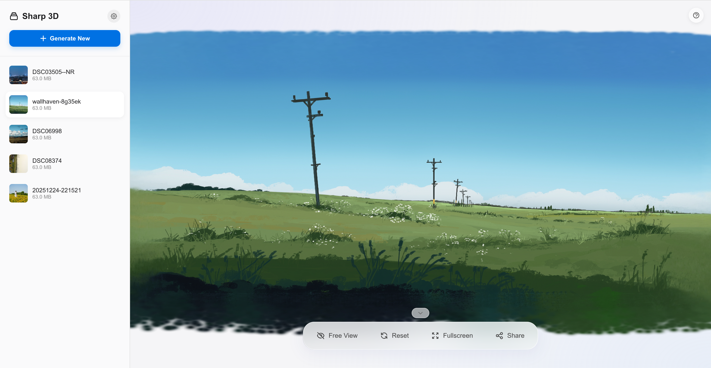
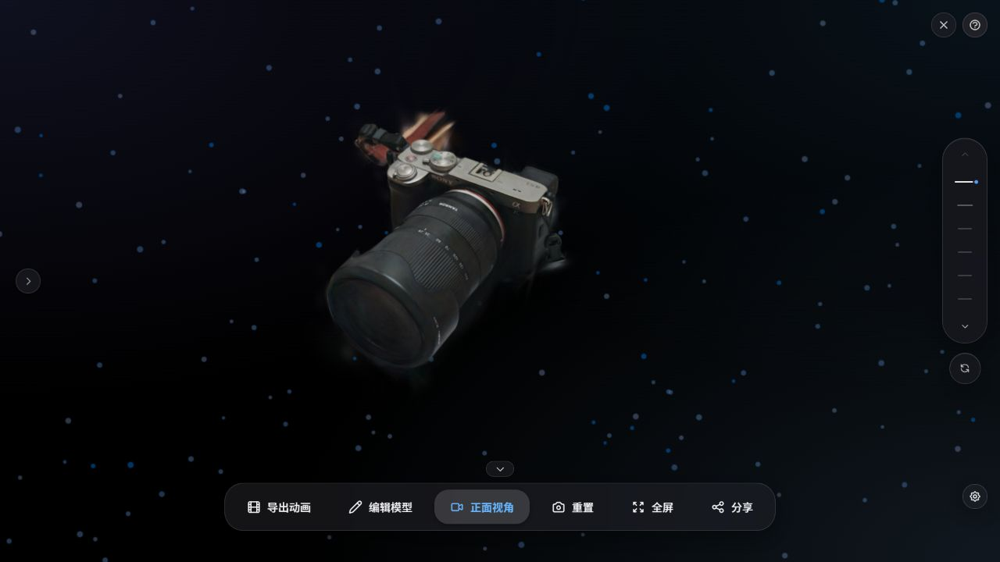
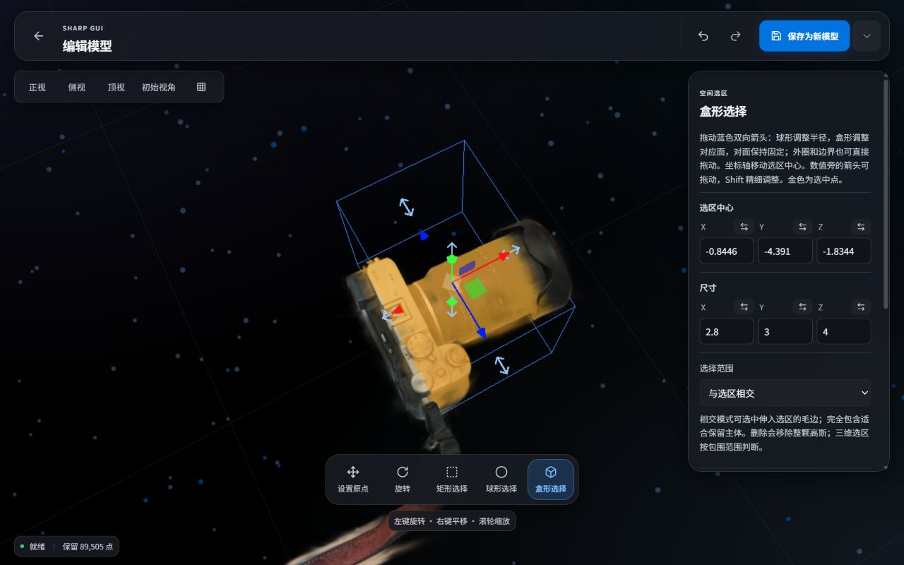
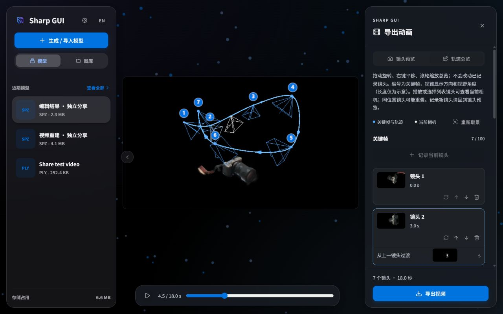
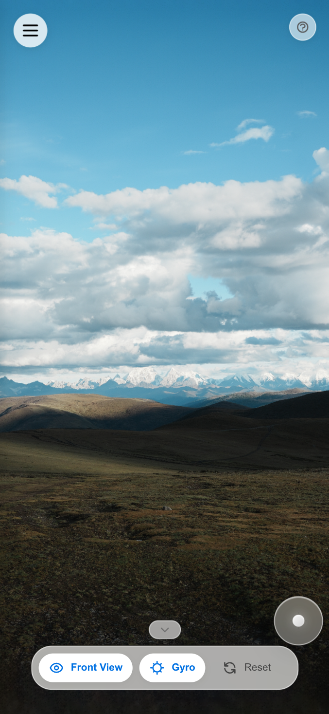
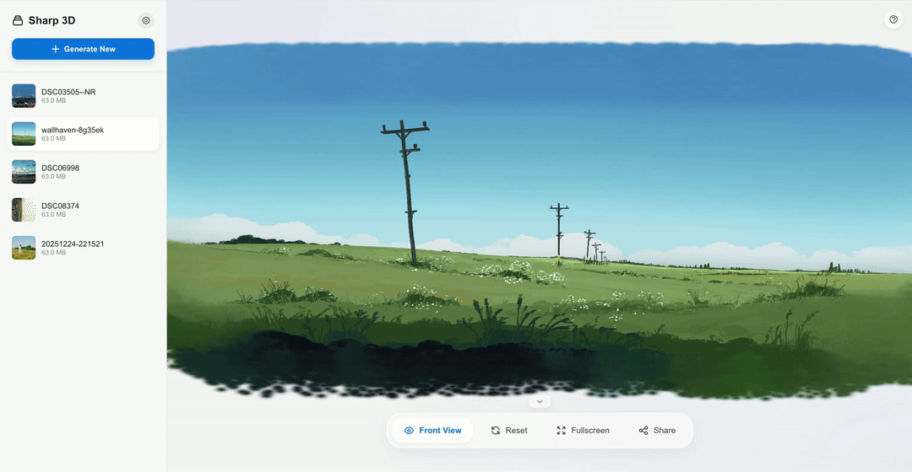

全模态控制
不仅支持键盘 WASD 漫游，更支持移动端陀螺仪体感操控，身临其境。

从照片或视频，到可探索的 3D 空间
拖入照片或视频，也可从本地相册开始；已有模型可直接导入
单图使用 Apple SHARP，视频使用 COLMAP + Brush
在浏览器中漫游、编辑模型，进一步导出动画或分享作品
将已有的一张照片，通过 Apple SHARP 转换为可交互的 3D 空间照片。移动视角，看见画面中的远近与层次，让记录过的风景、物品与瞬间多一种打开方式。
从你的第一张照片开始
风景、物品、生活片段，从本地文件或相册选一张照片即可生成。
拖动、缩放或键盘移动视角；手机也能通过触摸与体感观察。
电脑与 NAS 中的照片可直接加入生成队列，支持批量处理与原片回看。
用环绕拍摄的视频重建物品或场景。固定源帧规划、COLMAP 相机配准和 Brush 训练，让连续画面汇成有细节、有层次的静态 3D 模型。

视频重建已在 Windows + NVIDIA RTX 5070 Ti Laptop（12 GB）验证。其他平台尚未完成端到端验证；分辨率与耗时取决于素材、档位和设备。
在三维视图中修剪多余背景、校准原点与朝向。拖动边界或数值实时预览，从重建结果走向你想保留的作品。
了解模型编辑
矩形、球形与盒形选区，支持相交或完全包含；可删除选中或仅保留主体。
模型不动即可设置原点，再绕原点调平；变换写入模型文件，方便继续创作。
另存副本或覆盖原模型，保留原片关联与初始视角；支持撤销与重做。
选好角度，记录关键帧，让镜头沿平滑曲线穿行。轨迹总览同时显示路径、镜头编号与视锥，运动与拍摄方向一目了然。
了解动画导出
独立总览观察整条路径，播放或拖动时间轴同步查看当前相机，不改动已记录的镜头。
连续平滑、标准缓动、正弦、柔和停靠与匀速，五种曲线适配不同节奏；镜头可保存与载入。
横屏或竖屏，1080p / 4K，24 / 30 / 60 fps。逐帧导出无音轨 WebM，编码能力以浏览器与设备检测为准。
把电脑与 NAS 目录设为相册，浏览照片、视频并发起重建。蓝色 3D 标识带你回到已生成的模型；固定的「模型原片」相册汇集作品来源，同一原片的多次生成与编辑副本也能一起查看。

打破设备隔阂。在 PC
运行服务，手机、平板通过局域网即可流畅访问。
响应式设计，为您呈现一致的优雅体验。



通透的玻璃质感、清晰的层次与自然的动效，深浅主题与中英文界面保持一致。
推理与模型保存在本机；局域网访问支持密码门禁，远程设备浏览作品，本机保留管理权限。
Three.js + Spark 2.0 驱动交互预览，支持 PLY、SPZ、SPLAT、RAD，按模型与设备选择渲染效果。
不仅支持键盘 WASD 漫游，更支持移动端陀螺仪体感操控，身临其境。

触摸屏设备内置虚拟摇杆，实现如PC端键盘一样的漫游体验。
查看器、图库、视频与安全按用途分组。全局配置记住工作区与相册，换新版完整包也能接续使用。
受支持的 Git 安装与受管便携包可在更新中心选择稳定版或最新代码，保留模型、配置与运行环境。
生成、视频和导入模型统一管理，支持排序筛选、详情与元数据查看，以及直接进入编辑。
WASD / QE 移动，Shift 加速，Alt 精调

拖拽上传，并支持批量处理和任务中断
生成独立 HTML，在支持的浏览器中离线交互查看
现代化技术栈，为极致体验而生
Windows 原生运行，也支持 macOS 与 Linux 源码安装。
内置运行环境与模型缓存，解压后启动。按显卡选择 RTX 50 或主流 NVIDIA 包；视频重建请选择 RTX 50 视频完整包。
前往下载与校验 Release 提供网盘入口与 SHA256 校验。git clone https://github.com/lueluelue12138/sharp-gui.git
cd sharp-gui
install.bat
run.batgit clone https://github.com/lueluelue12138/sharp-gui.git
cd sharp-gui
./install.sh
./run.sh完整便携包面向 NVIDIA GPU。视频路线当前验证平台为 Windows + RTX 5070 Ti Laptop；请先按安装指南检查设备与依赖。